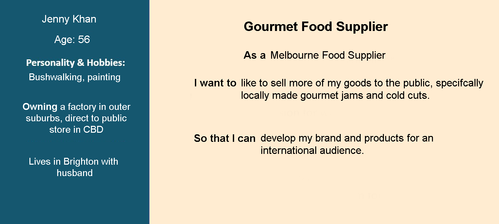
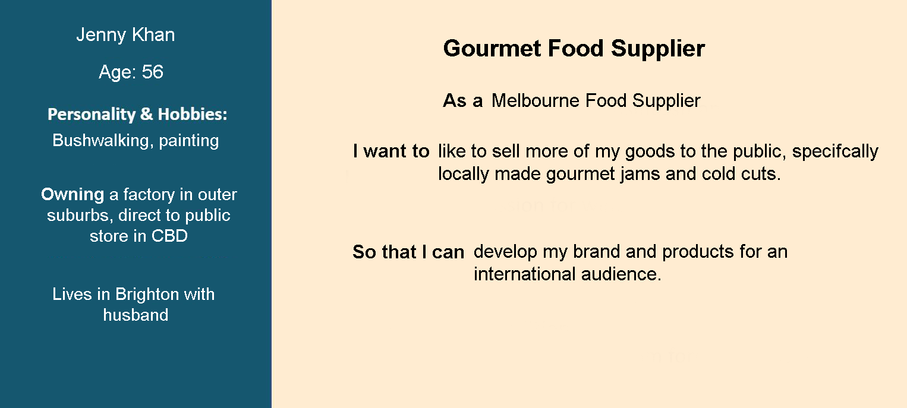
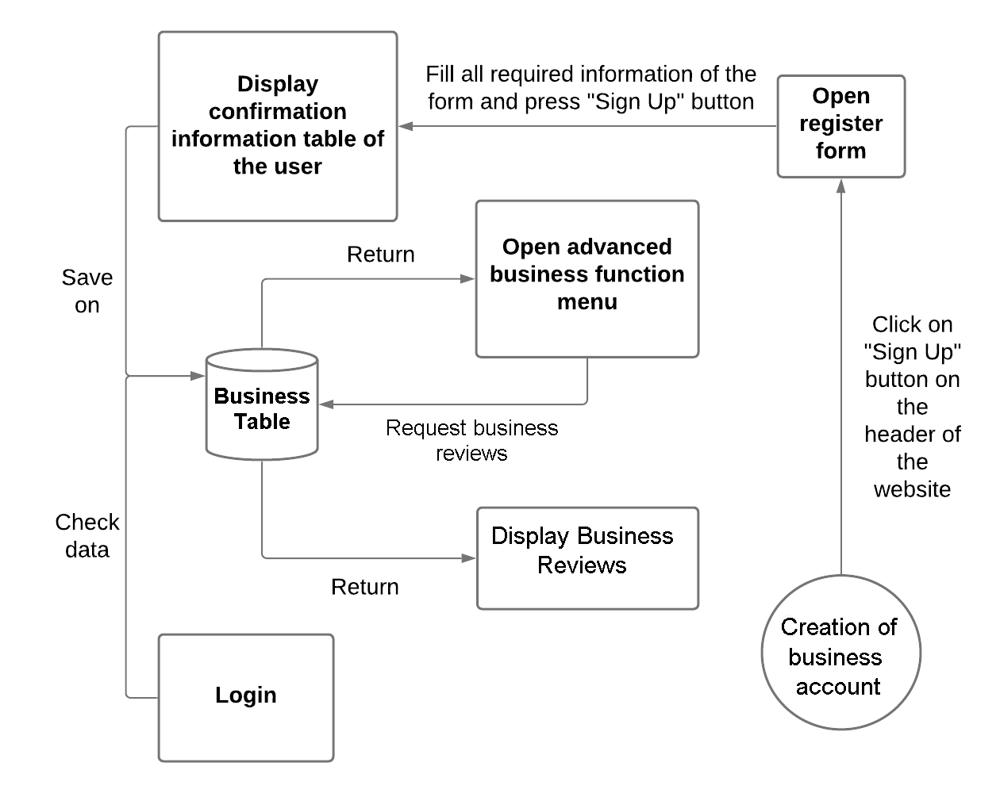
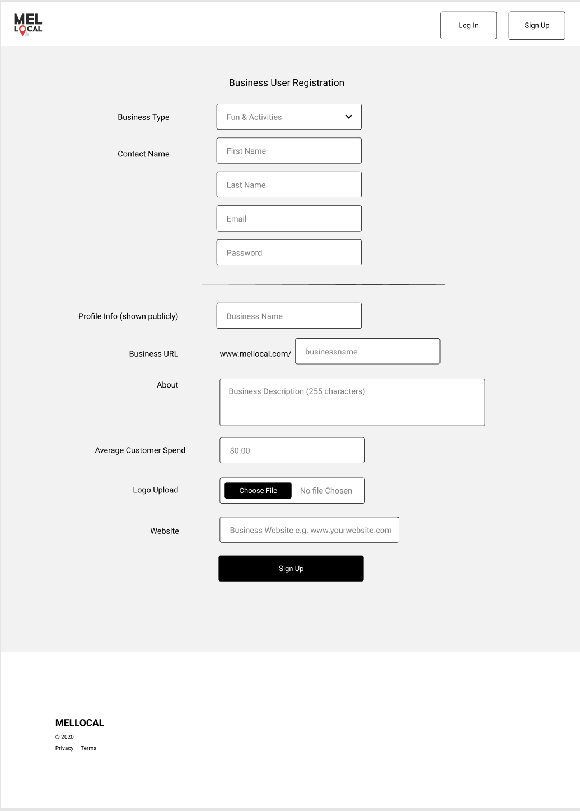
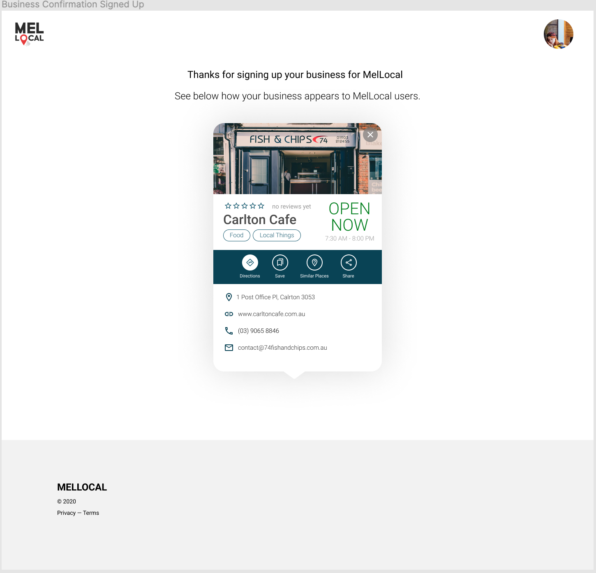

Business Advertisement
In the same fashion as regular users, MelLocal allows the registration of business users for the purpose of advertising and gaining more business from tourists and travellers. In order for this information to be displayed on the MelLocal website it need to be uploaded by the businesses owner. This information includes data such as location, average spend of customers, website, phone number etc. Business users will also need to provide a category in which their business will be displayed in.
User Stories
 

System Context Diagram
User Interface Design for Business Advertisement
1. Business User Registration Form - required by business users to upload their data
Consistency and Standards
Validation errors are displayed next to input boxes as users enter text, which is quite similar to other websites.
User Control and Freedom
Users can exit the business registration form by clicking on the MelLocal logo on the top left at anytime.
Visibility of System Status
Business users are given feedback on their inputs as their input them, any errors or validation errors are immediately returned to users to correct them.
2. Business User Registration Confirmation - displayed to business user after registration
Consistency and Standards
Confirmation pages will be something that users will have encountered on other websites, so users will be used to this flow after registering.
User Control and Freedom
Users can exit the business registration form by clicking on the MelLocal logo on the top left at anytime.
Visibility of System Status
Business users are given a confirmation of the input they have just submitted by being shown a preview of what their business will appear as on the MelLocal map page.